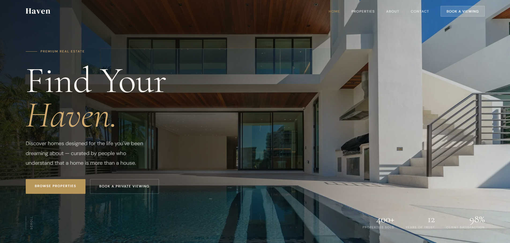
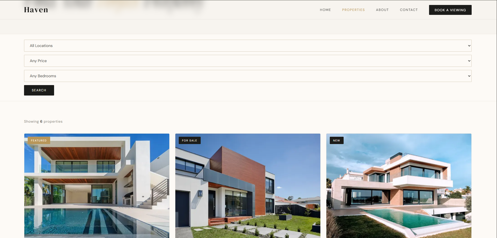
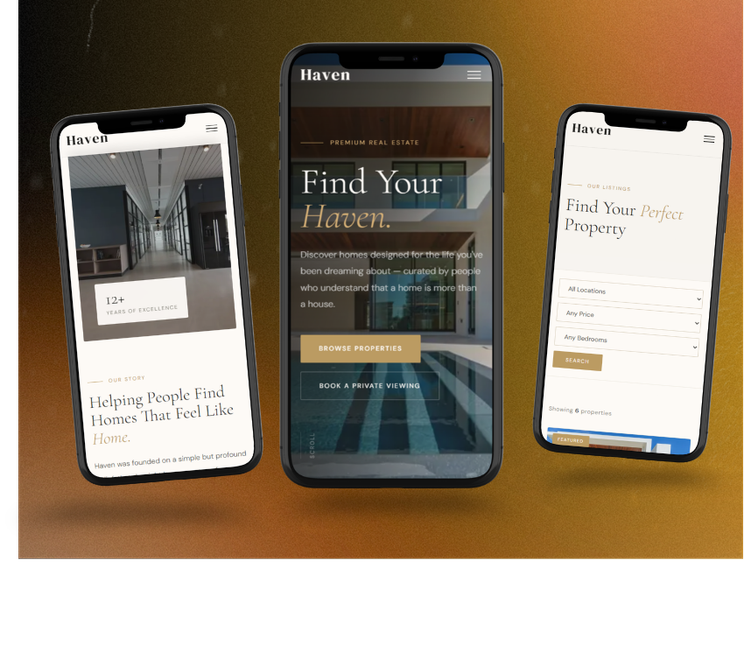

Case study: Real estate website
Haven
A premium real estate site concept. I wanted browsing homes to feel closer to a magazine than a spreadsheet, while keeping search quick.
- Type
- Personal practice project
- Role
- Designer and frontend developer
- Stack
- Next.js, React, TypeScript, Tailwind CSS
- Focus
- Listings, search and filter UX
The challenge
Most real estate sites feel like spreadsheets. Haven needed to feel aspirational and still be easy to use.
Making real estate feel premium.
Real estate sites often cram in listings, filters and prices with no sense of brand. I wanted each listing to lead with its photography and still surface the right homes fast.
Each visual choice had to answer one question: does this make the property more desirable, or does it get in the way?



Process
Research and direction
I studied premium real estate and hospitality sites and noted what makes them feel high-end: whitespace, large photos, restrained type, warm palettes.
Search and filter UX
I mapped how a buyer searches (location, price, type, features) and designed filters that feel natural instead of clinical.
Listing cards
Each card leads with the image. Clear type hierarchy and consistent spacing keep browsing smooth. Built with Next.js and TypeScript.
Responsive and deployment
Mobile-first, since many property searches happen on phones. I tuned image sizes and card layouts per breakpoint and deployed to Vercel.
Tech stack
What I delivered
- A responsive listings site for mobile, tablet and desktop
- Search and filter interactions designed to stay unobtrusive
- Deployed and live on Vercel
See it live
Open the deployed project or go back to my other work.